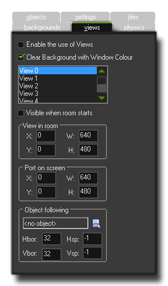

Views 视野
This section deals with views and how to use them in the room editor.
这一节将处理视野，以及怎样在房间编辑器里使用它们。
视野给出了一个机制，让你在屏幕的不同位置绘制房间的不同部分，或者仅仅将房间的部分在绘制在到整个屏幕上。例如，在多数平台游戏中，视野跟随主角，如果屏幕上显示整个层，角色会变得太小而看不出变化。视野也能用在双人游戏中，它允许你创建一个撕裂的屏幕，两部分屏幕都可以看见一个玩家。第三个用处是决定游戏中哪一部分应该卷起而固定另一部分（例如状态面板）。GameMaker:Studio使用视野可以轻松的实现这个效果。
Views give a mechanism for drawing different parts of your room at different places on the screen, or for drawing just a part of your room to cover the whole screen. For example, in most platform games, the view follows the main character, as if you could see the whole level on the screen your character would be too small to see and there would be no surprises for the player! Views can also be used in two-player games, as they permit you to create a split-screen setup in which in one part of the screen you see one player and in another part you see the other player. A third use is in games in which part of the room should scroll (e.g. with the main character) while another part is fixed (for example some status panel). This can all be easily achieved in GameMaker:Studio using views.
The Views Tab 视野选项卡

视野选项卡的顶部有一个标签块可以设置“Enable the use of Views（允许使用视野）”，一个游戏在激活任何一个视野之前请先勾选上这个。接下来的复选框是“Clear Background with Window Color”，如果知道视野即将随时覆盖整个屏幕，你可以不检查这个选项（它会保存一次刷新屏幕并帮助优化你的游戏），但是如果你的视野有部分重叠，屏幕留下空白的地方时，你应该检查这个选项，让没有视野的地方绘上你选择的颜色，目前这个颜色只能使用window_set_color()设置。
下面看到的是可用的视野列表（最大可定义8个），包含一些设置框用来定义在哪里绘制视野。首先你必须指定视野是否应该“Visible when the room starts(房间运行时可见)”，如果你希望使用视野，将确认每个房间载入时至少一个视野是可见的。可见的视野将会在视野列表中粗体显示。
At the top of the views tab there is a box labeled Enable the use of Views, and this must be flagged before any of the views can be active in a game. The next checkbox is the one that says Clear Background with Window Color. If you know that the views are going to be covering the whole screen at all times, then you can un-check this (which saves a redraw and so helps optimise your game), but if you have overlapping views that, when on the screen leave open spaces, you should check this so that those area where there is no view are filled in with the draw color of your choice. Currently this color can only be set through code using window_set_color().
Below this you see the list of available views (you can define a maximum of eight) with the information about where these views are to be drawn contained in the boxes below. First of all you must indicate whether the view
should be Visible when the room starts by checking the appropriate box, and if you wish to use views, make sure at least one view is visible at the start of every room. Visible views are shown in bold in the view list above this.
The View and The View Port 视野取景和视野的屏幕输出
视野通过两组不同的设置来定义，视野取景和视野的屏幕输出，这两个有时会让人混淆，在开始定义它们之前先稍微解释一下：
- 视野可以看作是即将在屏幕上显示的房间区域，即在房间里的取景。
- 屏幕输出可以看作是视野即将在屏幕的哪个地方显示出来，也即在屏幕上的显示。
所以这意味着房间里有一个640x480的视野取景，然后在屏幕上输出320x240，它会缩小视野的大小输出到屏幕上，你也可以照样设置更小的视野，输出更大的尺寸，图片大小适应输出的大小，在屏幕上将会看到比视野更大的效果。这样，你可以保持屏幕的输出大小和位置，改变视野来展示更多或更少的房间区域 。
视野都是使用矩形来定义视野，通过指定矩形左上角的位置，以及这个区域的宽和高定义这个矩形。然后通过定义视野的屏幕输出来指定这个区域在窗口的显示屏幕上的位置和大小，同样是指定左上角的位置和大小来实现（注意：右上角不是0,0的情况会导致奇怪的结果）。可以定义一个以上的屏幕输出，并允许重叠，这种情况将以指定的顺序绘制，一个在上一个在下。请了解这点，所有屏幕都是用矩形定义的，即将是偏离的情况，也将形成一个矩形，而矩形的空白空间将被窗体颜色填满，这意味着这些环境总是需要检查“Clear Background with Window Color”这个设置，否则屏幕输出之间的空白区域将被绘制上古怪的图像效果。
NOTE: 在 Windows8 SurfaceRT 设备上，画布最大为2048x2048,不能超出这个像素（不管是视野还是游戏的窗口设置）， 否则将破坏游戏画面或者降级。
A view is defined by two different sets of values, the view itself and the port on the screen. This can sometimes cause confusion so let's explain this a bit before explaining how we define each of them :
- The view is considered as an area of the room that we are going to display on the screen.
- The port is considered as the area of the display where we are going to draw the view.
So, this means that you can have a 640x480 view into your room, and then set the port to 320x240, which will display the view scaled down to that sized port on the screen, and you can also do the same and set the view to a smaller value and the port to larger making the image scale up to fit the port size and be shown on the screen larger than it is. In this way you can maintain a screen (port) size while changing the view and display more or less of the room in the same area of the screen.
The view is always defined as a rectangular area in the room, where you specify the position of the top-left corner, the width and the height of this area. Then you must specify where this area is shown in the window on the screen
by defining the view port, where again you specify the position of the top-left corner and the size (note that anything other than 0,0 for the top left corner can give strange results). You can have more than one port and they
can overlap, in which case they are drawn in the indicated order one on top of the other. Please realise that the over all screen area is always defined as a rectangular area, so your ports, even when offset, will form a rectangle, with
any empty spaces being filled in by the window color, meaning that in these circumstances you should always have Clear Background with Window Color checked or else you will get odd artefacts drawn in the spaces between
ports.
NOTE: On Windows8 SurfaceRT devices, there is a canvas limit of 2048x2048, which means the drawing canvas cannot go above those dimensions (neither with views, nor by setting the game
window directly) otherwise your game graphics will be corrupted or degraded.
Object Following 对象跟随
"Object Following（对象跟随）"选项在你想要视野跟随（举例：保持视野的焦点）特定的对象时使用。为了实现这一点，你必须点击菜单图标在弹出列表里选择一个对象（如果房间里选定的对象有多个实例，只有其中一个会被视野跟随）。围绕视野的边界有一个不显示的范围形成一个“缓冲”区域，视野通常的行为是只有当被跟随的实例靠近一个“缓冲区域”才会跟随其移动。这个区域可以用Hbor和Vbor的值来定义，其中HBOR是水平边界范围，VBOR是垂直边界范围。所以，设置这些值，比如64，视野将不会移动直到角色移动到视野边界之外64像素的地方。
最后，当角色移动到缓冲区域时，你可以指定视野的移动速度，默认值是-1，表示“瞬发”的意思，意味着跟随的对象一旦到达HBOR或VBOR的的缓冲区域时，视野将会跳到对象当前的位置。当然，你不会一直都这样设置，通过设置HSP和VSP的值，你可以设置视野水平或垂直滚动的速度而不是-1。注意，设置为0将导致视野根本不会移动，其它的值则表示每步移动的像素距离，比如Hsp设为5，视野将在水平方向上5像素每步的速度跟随对象。
The "Object Following" option is for when you want the view to "follow" (ie: maintain the view focused on) a certain object. To do this you must click on the menu icon and select an object from the list that pops up (if there are multiple instances of this object in the room, only one of them is followed by the view). The normal behaviour for a view is to only move when the instance being followed gets too close to a "buffer" zone that makes an invisible boundary around the edge of the view. This zone can be defined by you using the Hbor and Vbor values, where Hbor is the horizontal border zone, and Vbor is the vertical border zone. So, setting these values to, for example, 64, will mean that the view will not start to move and follow the character until he reaches 64 pixels from the edge of the view.
Finally you can indicate the speed at which the view moves when the character has reached the buffer zone, and this has a default value of -1. This default value is basically "instantaneous" and means that the moment the
follow object is outside the Hbor or Vbor buffer zone, the view will skip to its current position. Now, this is not always what you want and so you can set the vertical and horizontal scrolling speed for the view by setting the
values for Hsp and Vsp to something other than -1. Note that a value of 0 will cause the view to not move at all, and any other positive value is how many pixels it will move in any step, so setting the Hsp
to 5 will have the view follow the object at 5 pixels per step horizontally.
-断水-